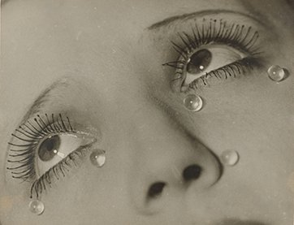

Larmes (Tears)
Man Ray · c. 1930–32 · Photograph · J. Paul Getty Museum, Los Angeles
In copyright. Look and learn: shown for study, not for download.
The tears are glass beads set on the model's cheeks. Man Ray made the picture some time between 1930 and 1932, in the years when the photographer Lee Miller was his assistant and the two of them reinvented the solarization technique together. A similar picture of a single eye appeared in a book of his photographs in 1934, and this one was published in the Surrealist magazine Minotaure in December 1935. At a 1995 sale it was valued at $200,000 to $250,000.